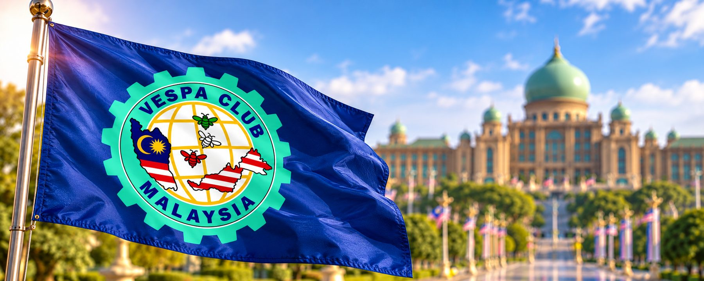
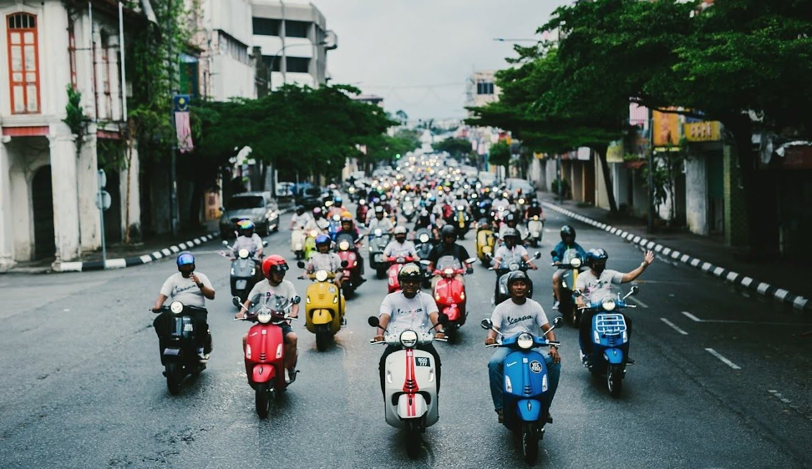
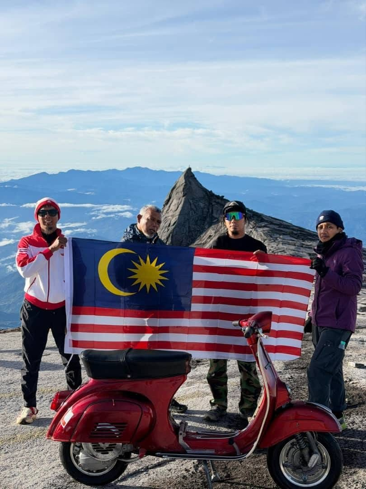
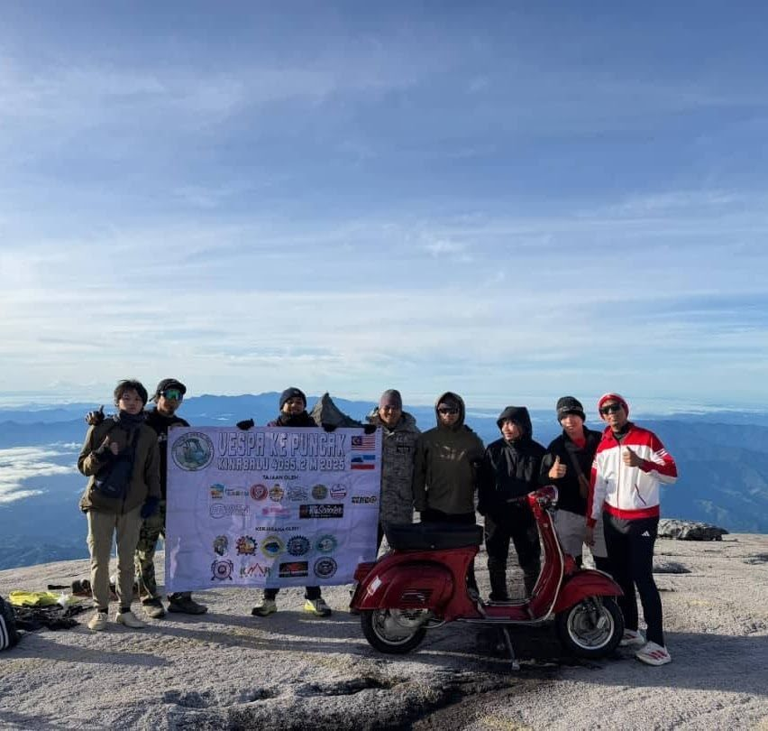
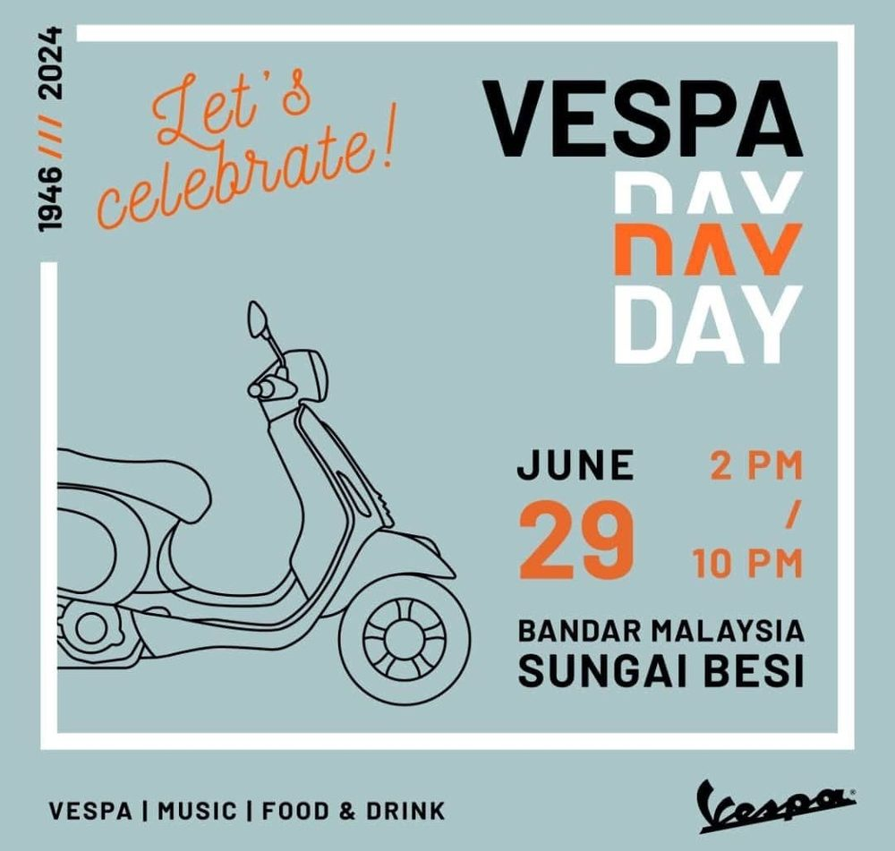

Our story
Uniting Vespa enthusiasts from across the nation under one community.
Built on a shared passion
Kelab Vespa Malaysia (Vespa Club Malaysia) is registered with the Registrar of Societies Malaysia (ROS) under registration number PPM-010-14-02082019, with its registration dating to 2nd August 2019.
Vespa Club Malaysia was founded with a vision to unite Vespa enthusiasts from across the nation under one community. Built on a shared passion for the iconic Vespa, our club brings riders together through friendship, camaraderie, and a love for the timeless Vespa culture.
Beyond riding, Vespa Club Malaysia strives to strengthen connections among local Vespa communities, encourage collaboration between clubs, and preserve the heritage and spirit of Vespa for future generations. We believe that Vespa is more than just a scooter. It represents a lifestyle, a friendship, and a bond that connects people from all walks of life.

Malaysia on the world stage
As Malaysia's representative within the international Vespa community through the Vespa World Club, we aim to build stronger global connections and showcase the passion of Malaysian Vespa enthusiasts on the world stage.
Together, we continue to ride forward with pride, unity, and a shared commitment to keeping the Vespa spirit alive.

From 2019 to a new era
Since 2019, Vespa Club Malaysia (VCM) has grown into a nationwide community of more than 500 members, united by a shared passion for Vespa, friendship, and the spirit of riding together.
Today, VCM is entering a new era with a renewed commitment to bringing the Malaysian Vespa community closer. Our current priorities include organising a major national Vespa event, strengthening connections among riders nationwide, and enhancing membership benefits to deliver greater value, engagement, and meaningful experiences for every member.
As we look to the future, VCM remains dedicated to growing a stronger, more connected community while proudly representing Malaysia within the international Vespa family through the Vespa World Club. Our vision is not just to grow our membership, but to make membership more meaningful.
- 2019
Officially registered
Registered with ROS on 2 August 2019 as Kelab Vespa Malaysia (PPM-010-14-02082019).
- 2020
Vespa Day 2020
Riders take to the streets together to celebrate Vespa Day.
- 2024
Vespa Day 2024
29 June at Bandar Malaysia, Sungai Besi, with Vespa, music, food and drink.
- 2025
Vespa ke Puncak Kinabalu
The Jalur Gemilang and a Vespa reach the summit of Mount Kinabalu.
- 2026
A new era
The 2026/2028 committee takes office, with 500+ members and a national event on the horizon.


Ride with us.
Become a member.
Join a nationwide family of more than 500 Vespa riders. Share the road, the events and the friendships, and help shape the next chapter of Malaysian Vespa culture.
Join membership